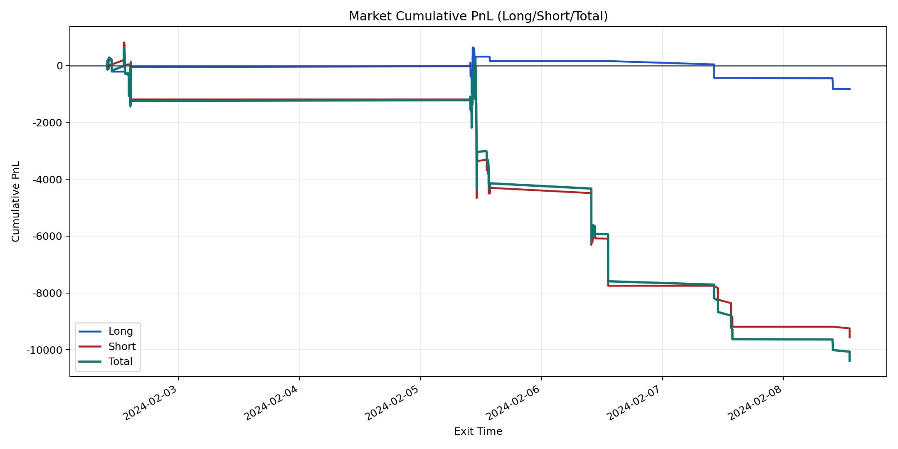
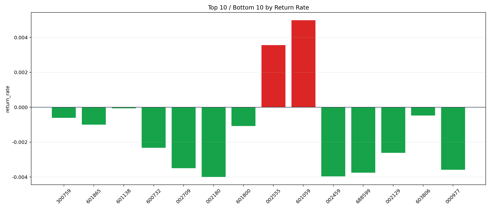

| repo_root | /home/haoranyou/data/output/dynamic_AUM_TAKER |
|---|---|
| period_months | 1 |
| period_label | 2024-02-02_to_2024-02-08 |
| start_time | 2024-02-02 09:51:12 |
| end_time | 2024-02-08 13:10:12 |
| n_trades | 369 |
| n_symbols | 14 |
| total_pnl | -10383.469749999977 |
| long_total_pnl | -820.7066999999315 |
| short_total_pnl | -9562.763050000045 |
| total_entry_notional | 6276012.0 |
| long_entry_notional | 2362514.0 |
| short_entry_notional | 3913497.9999999986 |
| total_return_rate | -0.0016544693907532325 |
| long_return_rate | -0.00034738702077529766 |
| short_return_rate | -0.002443533393910013 |
| top_symbols_by_return | ["601059", "002555", "601138", "603806", "300759", "601865", "601800", "600732", "002129", "002709"] |
| bottom_symbols_by_return | ["002180", "002459", "688599", "000977", "002709", "002129", "600732", "601800", "601865", "300759"] |

